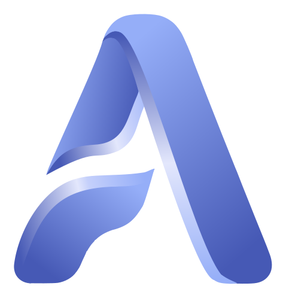

Avris AIПредложение для клиники. Голосовая медицинская документация для стационара: на русском — сегодня, на таджикском — собственная модель распознавания, обучена и готовится к запуску. Работает рядом с вашей нынешней системой, не заменяя её.
«Каримова, третья палата, вторые сутки после холецистэктомии. Жалуется на боль в области шва. Температура 37,2, давление 130 на 80, пульс 78. Швы чистые, признаков воспаления нет. Продолжаем цефтриаксон, перевязка завтра.»
Готовый дневник в формате 003/у: жалобы, объективный статус, оценка, план —
с ФИО, датой и номером карты. Температура, давление и пульс отдельно попадают
в лист наблюдения и на экран реанимации.
Врач читает, при необходимости правит и подписывает.
Поступление, первичный осмотр, ежедневные дневники, эпикриз в один тап. Формат 003/у, а не переведённый западный шаблон.
Врач идёт по палатам и говорит подряд. Система сама определяет, к какому пациенту относится каждая фраза, и раскладывает витальные по картам.
Состояние тяжёлых пациентов на одном экране, с цветовыми порогами и вызовом врача. Для ОРИТ и послеоперационных отделений.
Направление превращается в QR-код. Результат возвращается в карту к лечащему врачу, а не пациенту на руки. С пояснением к показателям.
Что дальше. Если по итогам месяца врачи захотят продолжить — подписка от 39 долларов за врача в месяц: это до 100 приёмов, при большем потоке тариф выше. В 2,5–5 раз дешевле западных аналогов. Если не захотят — мы расходимся, и вы ничего не должны.
О нас честно. Avris создан в Душанбе и работает в продакшене, но клинического пилота ещё не проходил — ваша клиника может стать первой. Продукт построил практикующий клинический ординатор, который сам ведёт документацию каждый день. Шесть технических решений поданы на патент через НЦИС Таджикистана. Мы не обещаем цифр экономии времени, которых пока не измеряли, — именно это и хотим измерить вместе с вами.
Пешниҳод барои клиника. Ҳуҷҷатгузории овозии тиббӣ барои беморхона: бо забони русӣ — имрӯз, бо забони тоҷикӣ — модели худамон омӯзонида шудааст ва ба зудӣ ба кор медарояд. Дар паҳлӯи системаи ҳозираи шумо кор мекунад, онро иваз намекунад.
«Каримова, палатаи сеюм, рӯзи дуюм пас аз холетсистэктомия. Аз дарди ҷои дӯхт шикоят мекунад. Ҳарорат 37,2, фишор 130 ба 80, набз 78. Ҷои дӯхт тоза, аломати илтиҳоб нест. Сефтриаксонро давом медиҳем, бандубаст пагоҳ.»
Рӯзномаи тайёр дар шакли 003/у: шикоятҳо, ҳолати объективӣ, баҳо, нақша —
бо ному насаб, сана ва рақами корт. Ҳарорат, фишор ва набз алоҳида ба варақаи
мушоҳида ва ба экрани реанимация мераванд.
Табиб мехонад, зарур бошад ислоҳ мекунад ва имзо мегузорад.
Қабул, муоинаи аввалия, рӯзномаҳои ҳаррӯза, эпикриз бо як тугма. Дар шакли 003/у, на тарҷумаи қолаби ғарбӣ.
Табиб аз палата ба палата мегузарад ва пай дар пай мегӯяд. Система худаш муайян мекунад, ки ҳар ҷумла ба кадом бемор тааллуқ дорад.
Ҳолати беморони вазнин дар як экран, бо ранги ҳушдор ва тугмаи даъвати табиб. Барои ОРИТ ва шӯъбаҳои пас аз ҷарроҳӣ.
Равонкунӣ ба QR-код табдил меёбад. Натиҷа ба корти бемор, ба назди табиби муолиҷакунанда бармегардад — на ба дасти бемор.
Баъд аз он чӣ мешавад. Агар пас аз як моҳ табибон давом доданӣ шаванд — обуна аз 39 доллар барои як табиб дар як моҳ: ин то 100 қабул аст, ҳангоми ҷараёни зиёдтар тарифи болотар. 2,5–5 маротиба арзонтар аз аналогҳои ғарбӣ. Агар нахоҳанд — мо ҷудо мешавем ва шумо ба мо чизе қарздор нестед.
Дар бораи мо ростқавлона. Avris дар Душанбе сохта шудааст ва дар кор аст, вале то ҳол дар ягон клиника озмоиш нагузаштааст — клиникаи шумо метавонад аввалин бошад. Системаро табиби ординатори клиникӣ сохтааст, ки худаш ҳар рӯз ҳуҷҷат мебарад. Шаш ҳалли техникӣ тавассути НЦИС-и Тоҷикистон ба патент пешниҳод шудаанд. Мо рақамҳои сарфаи вақтро ваъда намедиҳем, зеро онҳоро ҳанӯз чен накардаем.